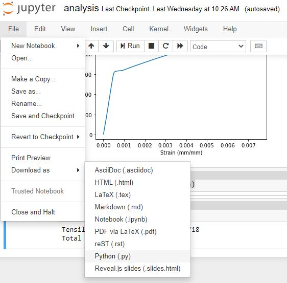

In a previous blog post, I wrote about how to incorporate a few software design principals into the code written by scientists. This post is a follow up on one specific software design principal that can be used by scientists: testing
Below are some practical ideas about how to incorporate software testing in science data analysis. Keep in mind the steps and tests below don't correspond to every piece of scientific code. My ideas are not designed to revoultionize the ways scientists write code, or fix repoducibility problems in published scientific research, or be a strict TDD (Test-Driven Development) framework for scientific code. The ideas below are some things I came up with that I wanted to share and my hope is that it is helpful and starts a few conversations.
OK - with that disclaimer out of the way, let's get started.
A sample notebook
Below is a sample Jupyter notebook with Python code that reads an excel file of data, plots the data, and then outputs two calculated values. In this case, the data is from a mechanical test frame (a piece of equipment that tests the strength of materials), but the same testing ideas could be applied to a script that analyzes data in another subject area.
Very often scientific code includes a couple of common steps:
- Read in data
- Clean or reorganize the data
- Run calculations on the data
- Create a figure or plot
The code below is one long script. In the rest of this post, we are going work on adding tests to this script.
import numpy as np
import pandas as pd
import matplotlib.pyplot as plt
%matplotlib inline
raw_data_df = pd.read_csv('data/raw_data.csv')
raw_data_array = np.array(raw_data_df)
cleaned_data_array = raw_data_array[1:,:]
d = 0.506
A0 = np.pi*(d/2)**2
F = cleaned_data_array[:,4]
stress = F/A0
strain = cleaned_data_array[:,5]*0.01
ts = np.max(stress)
te = np.max(strain)-np.min(strain)
print(f'Tensile Strength={ts}')
print(f'Total Extension={te}')
fig, ax = plt.subplots()
ax.plot(strain,stress)
ax.set_xlabel("Strain (mm/mm)")
ax.set_ylabel("Stress (MPa)")
plt.show()
In the top section of code, a few packages are imported. The next section of code reads in data from a .csv file, converts it to an array and cleans it up. The next section of code includes some analysis to calculate two values. The final section of code creates a plot.
So how can we possibly write software tests for this script?

Testing in Scientific Software is about Reproducibiliy
The first idea isn't code or a specific test, it's the idea that testing scientists code is about ensuring reproducibility. It's my understanding that testing software in general (not scientist's code) is about ensuring the system runs error-free and accomplishes what the programmer intends. In scientist's code, my argument is that testing should be more about making sure the code is reproducible by other rearchers (or more likely useable to the scientist 6 months later or usable by a new grad student), than ensuring the code runs error-free or produces the desired result. All scientists what their research to be repoducible, right?

Use a .py-file instead of a Jupyter notebook
The second idea is to write scientific code in a .py-file instead of writing code in a Jupyter notebook. Now, I love Jupyter notebooks. Jupyter notebooks are great for data exploration, plot creation and presentation. But... after the initial exploration, move code from a Jupyter notebook into a .py-file. Within the Jupyter notebook interface, you can select File → Download As and select .py as the file type.

After the Jupyter notebook is saved as a .py-file, run the .py-file from the command line. See if the same output is produced by the .py-file and the Jupyter notebook. Jupyter notebook cells can be run in any order. The execution order of a Jupyter notebook sometimes effects the output of the code. When the code is in a .py-file, the execution order of the lines of Python code are set by your programming logic. So idealy, each time your run the .py-file, the output is the same. In the next section, we'll deal with Python versions and dependancies.

Define Package Dependancies and Python Version
After the scientific script is saved as a .py-file, the next step is to define the Python version and package dependancies needed to run the script. This can be accomplished by creating a requirements.txt file that contains the specific versions of the packages your script is run with. These packages just need to be the high-level dependancies that are imported by your script. The contents of a sample requirements.txt file are below. Note that pytest is also included as a dependancy. We are going to use pytests a little later.
matplotib==3.3.2
numpy==1.19.2
pandas==1.1.3
pytest==6.1.1
If you don't know what version of matplotlib you are using, open the Python REPL and type:
>>> import matplotlib
>>> matplotlib.__version__
3.3.2
The .__version__ attribute is commonly defined for popular Python packages.
In addition to the packages used by your script, you can also define which version of Python you are using. The Python version can be stored in a file called runtime.txt. The contents of an example runtime.txt file are below:
python-3.8.3
The python version you are using is shown when you enter the Python REPL. In a termial type python and the version is printed out above the REPL prompt.
> python
Python 3.8.3 (default, Jul 2 2020, 17:30:36) [MSC v.1916 64 bit (AMD64)] :: Anaconda, Inc. on win32
Type "help", "copyright", "credits" or "license" for more information.
>>>
At this point, we have now converted an originol Jupyter notebook into a Python script. We have also included a requirements.txt file and a runtime.txt file. The directory structure of our growing project is shown below.
project/
analysis.ipynb
analysis.py
requirements.txt
runtime.txt
data/
raw_data.csv
output/
plot.png
Test the Dependancy Package Versions and the Python Version
Now that we defined our package versions and Python runtime version, we can write tests to confirm these are the same versions that are used when our script is run. If another researcher wants to run our script, they can confirm through our tests that they are using the same dependancy versions. Create a new directory called tests and inside create a new file called test_dependancies.py. In addition, create a blank __init__.py file along side the test_dependancies.py file. This defines the tests/ directory as a package.
The directory structure of our project should now look like:
project/
analysis.ipynb
analysis.py
requirements.txt
runtime.txt
data/
raw_data.csv
output/
plot.png
tests/
__init__.py
test_dependancies.py
Inside the test_dependancies.py file, we can write tests that confirm the versions of the packages we say are necessary in our requirements.txt file. Examples of these tests are below.
# test_dependancies.py
import pytest
import numpy as np
import pandas as pd
import matplotlib as mpl
def test_numpy_version():
expected = "1.18.5"
actual = np.__version__
assert actual == expected
def test_pandas_version():
expected = "1.0.5"
actual = pd.__version__
assert actual == expected
def test_matplotlib_version():
expected = "3.2.2"
actual = mpl.__version__
assert actual == expected
We can run these tests from the command line as long as pytest is installed. The command below runs the tests we defined in test_dependancies.py
> python -m pytest tests/test_dependancies.py
The output should be something like below:
# pytest output
We can also write a test for the version of Python we're using in test_dependancies.py. The test below ensure Python verison 3.8.3 is used. Make sure to import the platform module from the standard library or the test won't work.
import platorm
def test_python_version():
expected = "3.8.3"
actual = platform.python_version()
assert actual == expected
Now all four tests can be run on the command line with pytest:
> python -m pytest tests/test_dependancies.py
The output should look something like below:
pytest output
One more test we can write is for what character encoding is being used. If you are using a regular computer, this character encodeing should be utf-8. Make sure to add the sys module import at the top of the test_dependancies.py file.
def test_system_encoding():
expected = "utf-8"
actual = sys.getfilesystemencoding()
assert actual == expected
We can run all tests with pytest. They should all pass. If they don't, that means some trouble shooting. Are you sure those are the package versions you are using?
Now that we've written tests to ensure the versions of Python and our dependancies are what we think they are, we can make sure our script doesn't modify the data.
Test if your code should modifies the data
When your code runs, it should not modify, rename, rewrite or otherwise change the originol data. If that happens as a result of your script, take it out.
# pytest code that shows data isn't modified.
We want to start testing the script analysis.py itself. But before we can test the script, we need to break the script up into functions.
Break the script up into functions

Next, we are going to break the script analysis.py up into functions. If you don't know where to start, use the four bullet points below to help guide where to break up the one long script into 3 or 4 pieces.
- Read in data
- Clean or reorganize the data
- Run calculations on the data
- Create a figure or plot
Don't worry if all that happens is that you have four sections, each section is a function and each function has no inputs and no outputs.
```python
analysis.py
import numpy as np import pandas as pd import matplotlib.pyplot as plt
def import_data(): raw_data_df = pd.read_csv('data/raw_data.csv') raw_data_array = np.array(raw_data_df) return raw_np_array
def clean_data(raw_np_array): cleaned_data_array = raw_data_array[1:,:] return cleaned_data_array
def get_stress_and_strain(cleaned_data_array): d = 0.506 A0 = np.pi * (d / 2) ** 2 F = cleaned_data_array[:, 4] stress = F / A0 strain = cleaned_data_array[:, 5] * 0.01 return stress, strain
def get_tensile_strength(stress, strain): return np.max(stress).round(3)
def get_total_extension(stress, strain): return np.max(strain) - np.min(strain)
def plot(x,y): fig, ax = plt.subplots() ax.plot(x, y) ax.set_title(title) ax.set_xlabel("Strain (mm/mm)") ax.set_ylabel("Stress (MPa)") plt.show()
End the script by defining a ```main()``` function that calls the functions defined above in the correct order. Then call the ```main()``` function with an ```if __name__ == "__main__":``` line.
```python
def main():
raw_data_array = import_data()
clean_data_array = clean_data(raw_data_array)
stress, strain = get_stress_and_strain(clean_data_array)
plot(strain, stress)
ts = get_tensile_strength(stress, strain)
te = get_total_extension(stress, strain)
print(f"Tensile Strength: {ts}, Total Extension: {te}")
if __name__ == "__main__":
main()
Run the script from the command line. A plot should be produced and the output should be the same as when the script didn't contain any user-defined fuctions.
Consider the inputs and outputs of your functions

Now that we removed all hard-coded file names and made sure that the data wasn't modified by the code, is it any clearer what the input and output of our functions should be? At the very least, modify your functions to return True at the end. For a function that produces a plot, assign the outputs as Matplotlib fig and ax objects.
# code that have function inputs and outputs
Test each function

Now we are going to use pytest to test each function. Some of the functions can have expected input and output. Some functions may need an example file passed to them.
Before pytest can be used, pytest needs to be installed. You can install pytest using pip, Python's package manager
$ pip install pytest
I set up my directory structure as shown below. The file which contains the tests start with the filename test_ ....
project_directory/
├── analysis.py
├── analysis_script.py
├── data
│ └── raw_data.csv
├── LICENSE
├── README.md
└── tests
└── test_plot.py